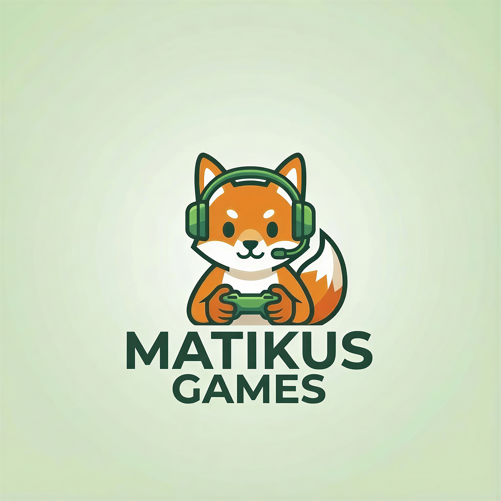

Matikus Games 🎮
Indie Game Studio by Mathias Kusch
Former Senior Test Engineer @ Automotive Industry
Quit the job, left the country, and started a bold new journey in 2026 as an indie game
solopreneur – making games with ❤️
Follow my journey and stay connected:
Check my socials
See current project

Current Project: PET FUSION CITY
Pet Fusion City is a cozy city‑building and management game where you create a vibrant town full of
fused pets. Players combine different animals into unique creatures, build shops, parks, and
production facilities, and optimize the flow of their city while the pets gather resources, complete
tasks, and bring the town to life.

All images are concept mockups. No actual in‑game screenshots yet.
Status: Early Development · Target Release: TBA 2026
Follow my journey from corporate engineer to indie game developer.